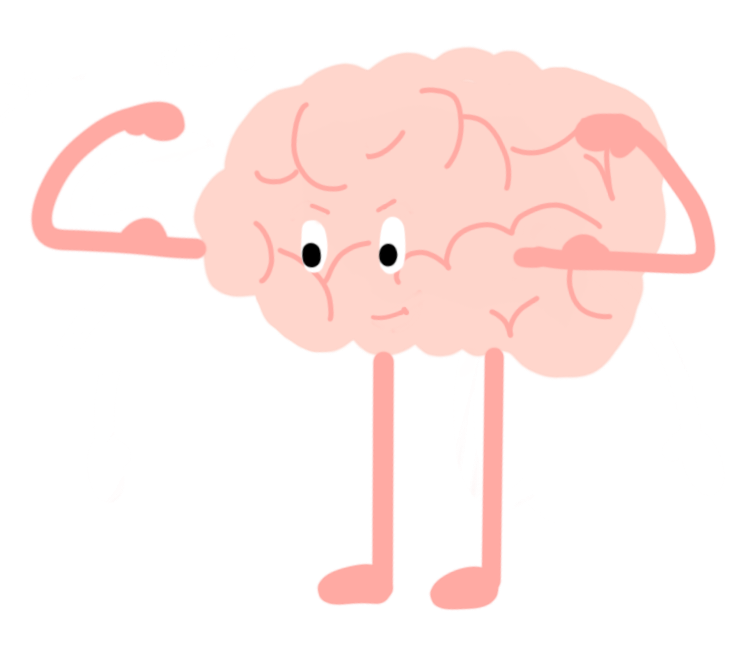

Kan cognitieve training het leervermogen van kinderen ondersteunen?
Elke deelnemende klas oefent met een computergestuurde denktraining. Wij onderzoeken of die training de redeneer-, taal- en rekenvaardigheden van kinderen vooruithelpt.

De bestaande cijfers zijn veelbelovend, maar niet eenduidig
Wetenschappelijk onderzoek suggereert dat bepaalde vormen van denktraining het potentieel hebben om de cognitieve en schoolse vaardigheden van kinderen te verbeteren. Tegelijk tonen andere studies dat die resultaten niet altijd eenduidig zijn.
Daarom gaan we in deze studie nauwgezet na in welke mate denktraining effect heeft, en of eventuele effecten op langere termijn behouden blijven — met twee vergelijkbare trainingsvormen en metingen op meerdere tijdstippen. Deelnemende scholen dragen zo rechtstreeks bij aan kennis over effectieve leerondersteuning.
Denkoefeningen die systematisch moeilijker worden
Elke deelnemer doet denkoefeningen op de computer, ingedeeld in niveaus die geleidelijk moeilijker worden. Door loting wordt elk kind toegewezen aan één van twee versies van deze oefeningen. Beide versies zijn evenwaardig qua tijdsinvestering en gericht op het verbeteren van denkvaardigheden van kinderen.
Kies wat voor u van toepassing is
Informatie voor scholen
Praktische organisatie, testafnames, wat we van de leerkracht vragen en wat de school terugkrijgt.
Informatie voor ouders
Wat uw kind precies doet, toestemming en vrijwilligheid, en wat u nadien te horen krijgt.